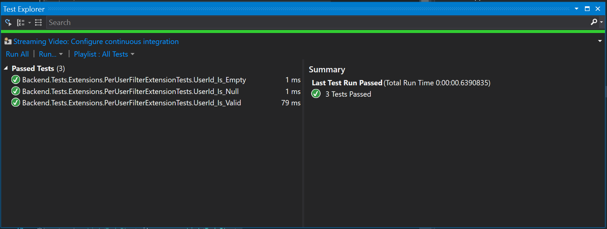
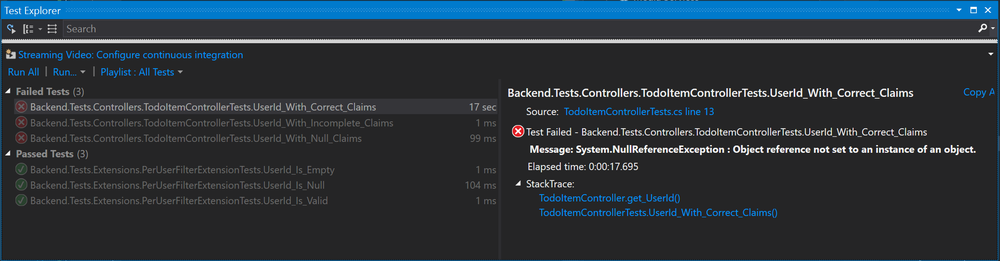

Testing your Mobile Application¶
There is nothing that causes more problems than when a developer works on testing. Testing a cross-platform client-server application across all the permutations that are possible is hard work. You will spend more time on developing tests than on writing code. Much of what is asked, however, is not required. That is primarily because most people want to test the entire stack. There are generally minimal custom code in the backend, so that can significantly reduce the amount of tests you write.
In this section, we will look at what it takes to do unit tests for your mobile backend and the mobile app, together with an end-to-end testing capability that allows you to test your application on many devices at once.
Testing your Mobile Backend¶
Most of the code within the mobile backend is pulled from libraries - ASP.NET, Entity Framework and Azure Mobile Apps. These libraries are already tested before release and there is not much you can do about bugs other than reporting them (although Azure Mobile Apps does accept fixes as well). As a result, you should concentrate your testing on the following areas:
- Filters, Transforms and Actions associated with your table controllers.
- Custom APIs.
Later, we will cover End to End Testing scenarios, where you will test the client in combination with your server. This is when the actual server is exercised fully by your client and is a much better test of the overall functionality of your server.
In addition, your mobile backend will come under a lot of strain after you go to production. You should plan on a load test prior to each major release in a staging environment that is identical to your production environment. We'll cover this later in the book.
Unit Testing¶
Let's take a simple example of an app that we developed back in Chapter 3. We used the data connections to develop a personal todo store - one in which the users ID is associated with each submitted record and the user could only see their own records. The table controller looked like the following:
namespace Backend.Controllers
{
public class TodoItemController : TableController<TodoItem>
{
protected override void Initialize(HttpControllerContext controllerContext)
{
base.Initialize(controllerContext);
MobileServiceContext context = new MobileServiceContext();
DomainManager = new EntityDomainManager<TodoItem>(context, Request, enableSoftDelete: true);
}
public string UserId => ((ClaimsPrincipal)User).FindFirst(ClaimTypes.NameIdentifier).Value;
public void ValidateOwner(string id)
{
var result = Lookup(id).Queryable.PerUserFilter(UserId).FirstOrDefault<TodoItem>();
if (result == null)
{
throw new HttpResponseException(HttpStatusCode.NotFound);
}
}
// GET tables/TodoItem
public IQueryable<TodoItem> GetAllTodoItems()
{
return Query().PerUserFilter(UserId);
}
// GET tables/TodoItem/48D68C86-6EA6-4C25-AA33-223FC9A27959
public SingleResult<TodoItem> GetTodoItem(string id)
{
return new SingleResult<TodoItem>(Lookup(id).Queryable.PerUserFilter(UserId));
}
// PATCH tables/TodoItem/48D68C86-6EA6-4C25-AA33-223FC9A27959
public Task<TodoItem> PatchTodoItem(string id, Delta<TodoItem> patch)
{
ValidateOwner(id);
return UpdateAsync(id, patch);
}
// POST tables/TodoItem
public async Task<IHttpActionResult> PostTodoItem(TodoItem item)
{
item.UserId = UserId;
TodoItem current = await InsertAsync(item);
return CreatedAtRoute("Tables", new { id = current.Id }, current);
}
// DELETE tables/TodoItem/48D68C86-6EA6-4C25-AA33-223FC9A27959
public Task DeleteTodoItem(string id)
{
ValidateOwner(id);
return DeleteAsync(id);
}
}
}
In addition, we have a LINQ extension method for handling the PerUserFilter:
using Backend.DataObjects;
using System.Linq;
namespace Backend.Extensions
{
public static class PerUserFilterExtension
{
public static IQueryable<TodoItem> PerUserFilter(this IQueryable<TodoItem> query, string userid)
{
return query.Where(item => item.UserId.Equals(userid));
}
}
}
In my minimalist testing suggestion, I would test the following:
- The LINQ Extension
PerUserFilter. - The
UserIdproperty. - The
ValidateOwnermethod.
The other methods are straight out of the standard table controller. I would defer unit testing of these until the end-to-end tests. Unit tests should be short and should be idempotent. The test should be able to be run multiple times and always return the same result. Since our service is defined to be run out of a stateful SQL database, it cannot be defined to be idempotent. However, the individual parts we are operating can be idempotent.
Unit tests are generally defined to be a separate project within the Visual Studio solution. By convention, they are named by appending .Tests to the project they are testing. My project is called Backend, so the test project is called Backend.Tests. To create the test project:
- Open the solution in Visual Studio.
- Right-click the solution, choose Add -> New Project....
- Select Installed > Visual C# > Test in the project type tree.
- Select xUnit Test Project as the project type.
- Enter Backend.Tests as the name, then click OK.
xUnit vs. MSTest vs. Others
Most version of Visual Studio support a specific type of test called MSTest. However, Visual Studio 2017 has integrated xUnit testing as well. xUnit is cross-platform whereas MSTest is PC only. I will be using xUnit for this project. If you are using a version of Visual Studio earlier than VS2017, you will not have the xUnit Test Project available. However, you can simulate the same project type manually. In addition, there are other test frameworks available. We will only be covering xUnit here.
Generally, copy the folder format from the main project to the test project. For example, the PerUserFilterExtension.cs file is in an Extensions folder within the main project. I'm going to create an Extensions folder within the test project and create a PerUserFilterExtensionTests.cs file with the tests in it. To create the tests:
- Right-click the
Extensionsfolder, and select Add -> New Item.... - Select Installed > Visual C# Items > Test in the project type tree.
- Select xUnit Test, and enter
PerUserFilterExtensionTests.csas the name. - Click Add.
Add your Project under Test as a Reference
You will need to add your project under test (in this case, the Backend project) as a reference to the test project.
You will get this code generated:
using System;
using System.Linq;
using Xunit;
namespace Backend.Tests.Extensions
{
public class PerUserFilterExtensionTests
{
[Fact]
public void TestMethod1()
{
}
}
}
We are going to replace the TestMethod1() method with our unit tests. XUnit tests are designated with the [Fact] attribute. You do some work on the class to test specific conditions, then assert that the results are valid. In the case of this class, for instance, we want to test that the result is correct under the following conditions:
- A valid string is provided.
- A zero-length string is provided.
- Null is provided.
Under no conditions should the extension method throw an exception. That means three tests, coded thusly:
using Backend.DataObjects;
using Backend.Extensions;
using System;
using System.Collections.Generic;
using System.Linq;
using Xunit;
namespace Backend.Tests.Extensions
{
public class PerUserFilterExtensionTests
{
[Fact]
public void UserId_Is_Valid()
{
List<TodoItem> items = new List<TodoItem>
{
new TodoItem { UserId = "test", Text = "Task 1", Complete = false },
new TodoItem { UserId = "test2", Text = "Task 2", Complete = true },
new TodoItem { UserId = "test", Text = "Task 3", Complete = false }
};
var result = items.AsQueryable<TodoItem>().PerUserFilter("test");
Assert.NotNull(result);
Assert.Equal(2, result.Count());
}
[Fact]
public void UserId_Is_Empty()
{
List<TodoItem> items = new List<TodoItem>
{
new TodoItem { UserId = "test", Text = "Task 1", Complete = false },
new TodoItem { UserId = "test2", Text = "Task 2", Complete = true },
new TodoItem { UserId = "test", Text = "Task 3", Complete = false }
};
var result = items.AsQueryable<TodoItem>().PerUserFilter(String.Empty);
Assert.NotNull(result);
Assert.Equal(0, result.Count());
}
[Fact]
public void UserId_Is_Null()
{
List<TodoItem> items = new List<TodoItem>
{
new TodoItem { UserId = "test", Text = "Task 1", Complete = false },
new TodoItem { UserId = "test2", Text = "Task 2", Complete = true },
new TodoItem { UserId = "test", Text = "Task 3", Complete = false }
};
var result = items.AsQueryable<TodoItem>().PerUserFilter(null);
Assert.NotNull(result);
Assert.Equal(0, result.Count());
}
}
}
Use the same .NET Framework Version
You will note that your tests will not compile at this point. That is because the server is dependent on .NET Framework 4.6 and the test project is created with .NET Framework 4.5. Both test and main project must be configured to use the same version of the .NET Framework. Right-click the test project, select Properties, then change the version of the .NET Framework to match your main project. Save and re-build your test project.
Visual Studio has a couple of methods of running the tests. Visual Studio 2017 has in-built support for the xUnit test runner. You may have to download an extension or run them manually in earlier versions of Visual Studio. My favorite way of running the tests is to open the Test Explorer using Test -> Windows -> Test Explorer, then click Run All. You can then right-click the Test Explorer tab and select Float to float it as a window. This allows you to enlarge the window so you can see the tests after they have run:

As you can see, my tests all passed. I can run these tests as many times as necessary as they do not depend on external requirements. This is not generally the case with table controllers. The table controller takes a dependency on a domain manager (most normally, the EntityDomainManager). The EntityDomainManager is configured to use a database via a connection string. Thus, we need to do things differently for testing table controllers even if we only test the unique functionality.
Let's take a look at the tests for the UserId property. The UserId property contains the contents of the NameIdentifier claim. My tests for this are:
- A correct set of claims are provided.
- An incomplete set of claims (without a NameIdentifier) are provided.
- No claims are provided.
The first and last are the typical authenticated and anonymous access tests. The first should provide the username in the NameIdentifier, and the latter should throw an error. The middle test is an important one for us. What do you want to happen if the user is authenticated, but the NameIdentifier claim was not provided? It's bad form for us to return a 500 Internal Server Error, even though that would be appropriate here. Instead I want to assume that the user id is blank so that everything keeps on working. (One can argue that this is not correct either!)
Install the same NuGet packages
Unlike the scaffolded project for Azure Mobile Apps or ASP.NET MVC, no additional packages are added to the test project, which means you will need to figure out which packages you need to simulate the requirements for the test. Don't guess. Look at the packages that are in your project under test and duplicate them. Right-click the solution and select Manage NuGet Packages to get a good idea of what your test package is missing. Under the Installed list, you can tell what packages are required and which projects have them installed.
To test authentication, I need to mock the ClaimsIdentity. I put this in a utility class:
using System.Security.Claims;
namespace Backend.Tests.Utilities
{
public class TestPrincipal : ClaimsPrincipal
{
public TestPrincipal(params Claim[] claims) : base(new TestIdentity(claims))
{
}
}
public class TestIdentity : ClaimsIdentity
{
public TestIdentity(params Claim[] claims) : base(claims)
{
}
}
}
My (incorrect - deliberately) test looks like the following:
using Backend.Controllers;
using Backend.Tests.Utilities;
using System.Security.Claims;
using System.Threading;
using Xunit;
namespace Backend.Tests.Controllers
{
public class TodoItemControllerTests
{
[Fact]
public void UserId_With_Correct_Claims()
{
var controller = new TodoItemController();
controller.User = new TestPrincipal(
new Claim("name", "testuser"),
new Claim("sub", "foo")
);
var result = controller.UserId;
Assert.NotNull(result);
Assert.Equal("testuser", result);
}
[Fact]
public void UserId_With_Incomplete_Claims()
{
var controller = new TodoItemController();
controller.User = new TestPrincipal(
new Claim("sub", "foo")
);
var result = controller.UserId;
Assert.Null(result);
}
[Fact]
public void UserId_With_Null_Claims()
{
var controller = new TodoItemController();
controller.User = null;
var ex = Assert.Throws<HttpResponseException>(() => { var result = controller.UserId; });
Assert.Equal(HttpStatusCode.Unauthorized, ex.Response.StatusCode);
}
}
}
The UserId_With_Null_Claims test is an interesting recipe for testing that the right exception is thrown. In this case, I expect the methods to return a 401 Unauthorized response to the client. Of course, the [Authorize] tag will do this for my well before my code is hit, but it's good to be accurate.
If I run the tests, I get the following:

What I want to do is run that test again, but attach a debugger. To do this, set a breakpoint on the property in the TodoItemController. Then right-click the failing test and select Debug Selected Tests. This runs the test with a debugger connected. The breakpoint you set will be hit and you will be able to inspect the code state while it is running. The first test is failing because ClaimTypes.NameIdentifier is not "name". I re-wrote the test as follows:
[Fact]
public void UserId_With_Correct_Claims()
{
var controller = new TodoItemController();
controller.User = new TestPrincipal(
new Claim(ClaimTypes.NameIdentifier, "testuser"),
new Claim("sub", "foo")
);
var result = controller.UserId;
Assert.NotNull(result);
Assert.Equal("testuser", result);
}
This test will now pass. The other two tests are actually the result of incorrect code. I've adjusted the code accordingly:
public string UserId
{
get
{
if (User == null)
{
throw new HttpResponseException(HttpStatusCode.Unauthorized);
}
var principal = User as ClaimsPrincipal;
Claim cl = principal.Claims.FirstOrDefault(c => c.Type == ClaimTypes.NameIdentifier);
return cl?.Value;
}
}
This is a little longer than the original one-liner, but it's more accurate. This means that when I've forgotten what this particular method does in six months time, it will still do the right thing in all conditions.
Use Test-Driven Development
There is a whole school of thought on how to develop using testing as the driver known as Test Driven Development or TDD. In this school of thought, you write the tests first, ensuring you have 100% of the cases covered. Your code is correct when the tests pass. This method provides for very rapid development, but you do spend most of your time developing tests rather than code.
The other big class of testing to do is against custom APIs. You can test these the same way. For example, the standard scaffolding for an Azure Mobile Apps server contains a ValuesController.cs, which I have modified:
using System.Web.Http;
using Microsoft.Azure.Mobile.Server.Config;
namespace Backend.Controllers
{
// Use the MobileAppController attribute for each ApiController you want to use
// from your mobile clients
[MobileAppController]
public class ValuesController : ApiController
{
// GET api/values
public string Get(string user)
{
return $"Hello {user}!";
}
}
}
I can test this with the following:
using Backend.Controllers;
using Xunit;
namespace Backend.Tests.Controllers
{
public class ValuesControllerTests
{
[Fact]
public void Get_Name_Works()
{
var controller = new ValuesController();
var result = controller.Get("adrian");
Assert.Equal("Hello adrian!", result);
}
}
}
As with all other testing, ensure you think about all the things that could happen here, and test them all. Ensure that the appropriate response is always returned and that you are never leave your server or a connected client in a bad state. A big example of this in the case of mobile apps: If a response is meant to be a JSON encoded version of an object on your client, ensure it can be deserialized to that object under all conditions.